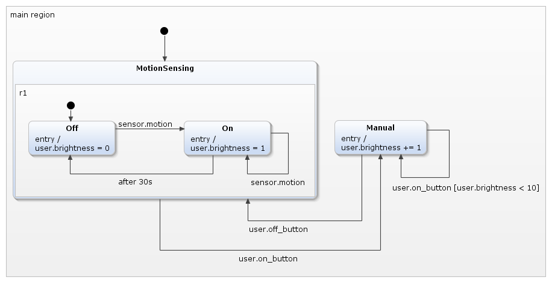
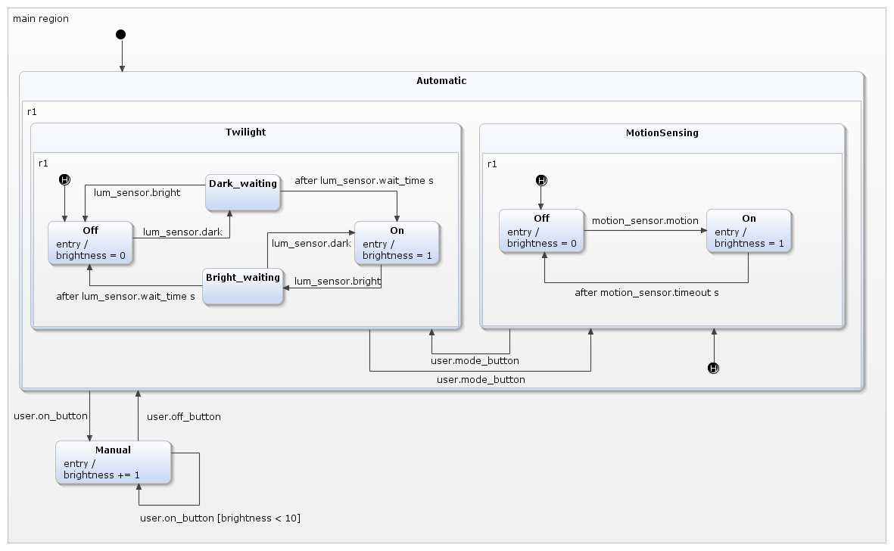
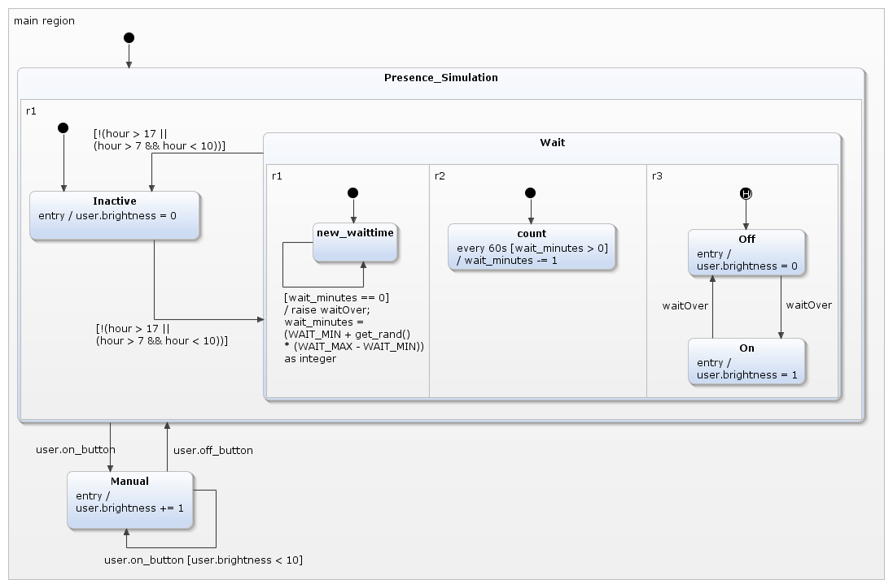

Light Switch Example Series
This is a series of examples demonstrating multiple features of YAKINDU
SCT. With each iteration, more features are shown. This example is a good
starting point to dive into SCT headfirst.
The First Iteration: A Simple Switch
This is the most basic way to model a light switch. When the operate
event is raised, the light switch changes back and forth between the On
and Off states.

The statechart can be simulated in YAKINDU Statechart Tools, but since the
operate event is declared as internal it cannot be
raised from any external client code.
The Second Iteration: Introducing Interfaces
A statechart is accesible from the outside, i. e. from client code,
via interfaces. This light switch version has an interface named
user, and this interface provides the user.operate event
to the outside so that it can be raised externally. Events declared as internal
interface can – nomen est omen – only be used internally. YAKINDU SCT does
not generate any methods to interact with internal objects except for the
state machine itself.

The Third Iteration: Introducing Variables
While the classic theory of input/output
automata is only aware of events, Harel
statecharts and YAKINDU SCT have many more features, including
variables.
Using variables, we can model a dimmer. The idea is to
maintain the brightness of the lamp in a variable named brightness.
Changing this variable's value corresponds to changing the lamp's
brightness. Each time the state machine activates the Off
state, the brightness variable is explicitly set to 0 in the Off
state's entry actions.
For this purpose, our assumed light switch no longer has only a
single switch to turn the light on and off. Now it has two buttons:
The "on" button turns on the light and, upon repeated
pushing, turn the brightness higher until the latter's maximum is
reached.
The "off" button turns off the light.

When the user operates the "on" button for the first time, i. e. the
user.on_button event is raised, the light is turned on at its
lowest brightness level of 1. The state machine triggers the transition
leading from the Off state to the On
state. This transition has an action
user.brightness = 1
to set the brightness to 1.
While the On state is active, each further push on the
"on" button resp. each further raising of the user.on_button
event, triggers the transition leading from the On state
to itself. The brightness is incremented by 1 up to a value of 10. The
guard condition
[user.brightness < 10]
inhibits execution of the transition if the brightness is 10 (or greater,
but that cannot happen).
Operating the Off button switches off the light. The
dimmer will not remember the last brightness level and will restart with a
brightness of 1 when the "on" button is pushed again.
The example shows how to manipulate a variable by an action as well
how to use it in a guard condition in transitions.
The Fourth Iteration: Introducing Composite States
Let's enhance our light switch by a motion sensor.
Initially, the light is off, but whenever the motion sensor senses a
motion, it turns the light on. After 30 seconds without any motion the
light is turned off again.
Operating the light switch manually overrides this behaviour at any
time. When the user pushes the "on" button, the light's brightness is
increased by 1, effectively turning the light on if it was off and turning
it one step brighter if it was on already. In this mode the light switch
behaves just like the dimmer described in the previous section. If the
user pushes the "off" button the light switch changes back to motion
sensing mode.
The sensor is modeled by an additional sensor interface. It has a
single event named motion event. The sensor raises this event
when it detects a motion.
For modeling the behavior of the light switch with a motion sensor, composite
states come in handy, another important feature of YAKINDU SCT. A
composite state is a state that contains one or more other states
(substates). One of the advantages is the possibility to group states into
logical compounds and thus make the statechart more comprehensible.
Another advantage is the option to exit a composite state by
transitions that have the composite state as their source states, not any
substate. If such a transition is executed, the composite state is left
regardless of which of its substates are active at the moment. You could
achieve the same without composite states, but it would be cumbersome
since you would need a transition from each of the plain states in the
group to the "outside".
In the model depicted below, the initial state defines the MotionSensing
composite state as the first active state. This composite state has its
own initial state, pointing to the Off state. A signal
from the motion sensor, i. e. raising the sensor.motion
event, transitions to the On state and sets the
brightness to 1 via the On state's entry action.
Subsequent sensor.motion events keep the state machine in the On
state. After 30 seconds without any signal from the motion sensor the
execution flow transitions to the Off state and the light
is turned off again.
When the user pushes the "on" button, the state machine transitions from
the MotionSensing composite state to the Manual
state, regardless of whether the active substate of MotionSensing
was Off or On.
The Manual state's entry action increases the brightness
by one, so that the light is turned on when the source state was Off
and turned one step brighter if the source state was On.
The entry action is also executed each time the user.on_button
event is raised, until the brightness reaches its maximum. The user.off_button
returns to the MotionSensing mode and turns the light
off.

The Fifth Iteration: History States
This example clarifies how history states work, what they do, and
especially what they don't do. To illustrate this, we introduce another
mode to our light switch: twilight / luminosity control.
When operating in twilight mode, the light switch automatically turns on
the light when it is dark and turns it off when it is bright. For this
purpose we introduce a luminosity sensor. It permanently senses
the ambient brightness and fires lum_sensor.bright or lum_sensor.dark
events all the time. It is out of scope how "dark" and "bright" are
defined and how they are configured in the luminosity sensor. Suffice to
say that the sensor is always raising events – say, multiple times per
second – and that each event is either lum_sensor.bright or lum_sensor.dark.
The light switch is either operated manually or operates automatically.
When in automatic mode, the light switch functions either as a twilight
switch as explained above or as a montion sense switch, see the previous
section. The user interface gets another button to toggle between the two
modes via the user.mode_button event. We should have added a
third automatic mode where the light switch doesn't do anything but simply
turning the light of. However, for brevity we left that out resp. as an
exercise to the reader.
The light switch is starting to change into a full light control
module. Its statechart now looks like this:

The automatic modes are grouped into the Automatic
composite state. That state is subdivided into a composite state for the
twilight functionality and another one for motion sensing. We have
discussed motion sensing before, but the Twilight
composite state deserves some explanation. When the ambient brightness is
changing from day to night or from night to day, the luminosity sensor
doesn't deliver consistent values. Rather small fluctuations are causing a
succession of quickly alternating lum_sensor.dark and lum_sensor.bright
events. Having each of these events turn the light on or off,
respectively, would result in a flickering lamp for some time during
twilight. To avoid this, the state machine requires a certain permanence
in the luminosity sensor's results before actually toggling the light's
state.
This is done like this: During the day the Twilight
composite state's Off substate is active. In this state
the state machine listens for lum_sensor.dark events. These
events are starting to be raised when it is about to get dark. First they
come in spuriously, later there are more lum_sensor.dark than lum_sensor.bright
events within a given period of time, until only lum_sensor.dark
events are raised. The first lum_sensor.dark changes the state
from Off to Dark_waiting. In this state
we are waiting until a certain time has passed, e. g. 10 seconds, to
be configured as constant lum_sensor.wait_time. However, each lum_sensor.bright
event brings the state machine back to the Off. Only if
the waiting time has passed without any lum_sensor.bright
interfering, the On state is reached and the light is
turned on. The analogous happens in the morning when the first light of
the day is close. The twilight switch is also robust against short
disruptions like overshadowing the sensor during the day or illuminating
it briefly by a car's headlamps during the night.
An important requirement is that any of the automatic modes can be
interrupted at any time by manually operating the light switch via user.on_button.
When the user later raises a user.off_button event, the state
machine should return to that particular substate somewhere down in the Automatic
composite state that was active before the manual intervention. Similarly,
when toggling between Twilight and MotionSensing,
the state machine should remember the respective active substate and
return there when control is turned back.
That's what history states are good for. The statechart
contains three shallow history states. There is one in Twilight,
one in MotionSensing, and one in the Automatic
composite state the former two are nested in.
A shallow history state, contained in a composite state with a set of
possible states inside that composite state, remembers which of these
states was active when that composite state was left.
The shallow history state in Automatic remembers whether
Twilight or MotionSensing was active
when Automatic was left, but it doesn't remember which
state was active within the active one of these two. On re-entry, the
history state would activate either Twilight or MotionSensing,
but these would start on their respective entry states. This is why there
is a history state in each of them as well.
If you have worked with history states before, you might be inclined now
to say: "A deep history state would have been the correct thing
here." However, you would only be partially right. A deep history state
remembers the active state in its own region and everything that was
active inside of this state, recursively down to the lowest level. We
might spare the two shallow history states in Twilight
and MotionSensing. But it would not behave in the same
way – a history state is activated only when its containing region is
actually left. Using one deep history state would not allow to remember
the active state in MotionSensing when switching to Twilight,
and vice versa. The deep history state would be activated only if we left
the whole Automatic composite state – and when switching
between automatic modes we are not going to do that.
The Sixth And Last Iteration: Introducing Operations
This is the final version of the light switch, which has become a
light computer. This version adds a presence simulation, which means it
behaves as if a person operated the light at sensible and irregular
intervals although nobody is present. The motion detection and the
twilight detection are left out for clarity.
The presence simulation is active on certain hours of the day only,
namely from 17:00 to midnight and from 06:00 to 10:00.
To implement this functionality, we are finally hitting the limits of the
statechart language. It neither provides a function returning random
values nor one to get the current date and time. However, YAKINDU SCT
allows you to implement your own operations to overcome these
limitations. An operation is called from the state machine itself, so you
don't have to care about when and how they will be called. You can receive
arguments from the state machine and return a value, exactly like a normal
function or method call.

We use this feature here to do two things:
-
Ask for the current time of day to decide if we should actually engage the Presence simulation (using the every-keyword
inside of the declaration)
-
Ask for a random float to produce a random waiting interval in minutes between WAIT_MIN and WAIT_MAX.
Every 60 seconds, the waiting time is decreased by one. This happens in an orthogonal state to showcase
the different available possibilities to do periodic tasks. Everytime wait_minutes reaches a value of 0,
which means the waiting time is over, the waitOver-event is raised (raise-keyword)
which makes the light switch between the On and Off states.
On this occasion a new waiting time is calculated by calling get_rand() as well.
Furthermore, we make use of three
orthogonal states, which you can see inside of the state
Wait.
The reason for this is that these three states are then executed virtually in parallel (their order is relevant, though).
This way, we can have three tiny statecharts that count down every 60 seconds, check if a new waiting time needs to be
calculated and if the light's state needs to be switched (the two latter ones happen at the same time, but the functionality
is different).
The other features of the light switch from earlier iterations are stripped away here to keep the statechart comprehensible.